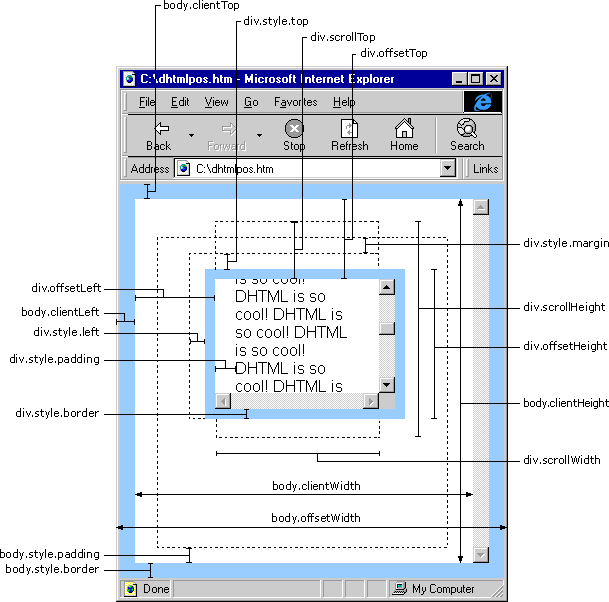

| ||
The following section is designed to help Web authors understand how to access the dimension and location of elements on the page through the DHTML Object Model.
The following diagram shows the DHTML Object Model properties related to the dimension and location of elements. The example page contains a DIV element relatively positioned on the page. Since the overflow attribute of the DIV has been set to scroll and it contains more content than can be displayed within its limited client area, scroll bars are displayed.

Click the Show Me button to see a working example.
Did you find this topic useful? Suggestions for other topics? Write us!
© 1999 Microsoft Corporation. All rights reserved. Terms of use.